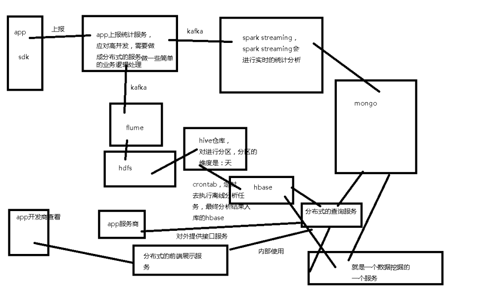

项目介绍
本項目是一个真实的企业级云产品项目，该项目是国内专业的移动应用统计分析平台，每天触达14亿活跃设备，每月覆盖80%以上新增手机消费者，几乎覆盖全部iOS消费者，通过该项目系统帮助移动应用开发商统计和分析流量来源、内容使用、用户属性和行为数据，以便开发商利用数据进行产品、运营、推广策略的决策。提供基本统计、活跃用户、使用频率、使用时长、页面访问、地域分析、版本分析、渠道分析、设备分析、操作系统、分辨率、运营商、联网方式、自定义事件分析、终端异常分析,流失用户分析等多种统计分析手段。
1、 移动应用专属数据分析解决方案，国内专业的移动应用统计分析平台。我们帮助移动应用开发商统计和分析流量来源、内容使用、用户属性和行为数据，以便开发商利用数据进行产品、运营、推广策略的决策。多指标，多维度，丰富模型
2、主要分析方向：
01、应用趋势
清晰展现应用的新增用户、活跃用户、启动次数、版本分布、行业指标等数据，方便您从整体掌控应用的运营情况及增长动态。
02、渠道分析
在哪里推广最有效？从哪里获取的用户最有价值？友盟统计渠道分析功能可以实时查看各渠道的新增用户、活跃用户、次日留存率等用户指标，通过数据对比评估不同渠道的用户质量和活跃程度，从而衡量推广效果。
03、留存分析
您可以掌握每日(周/月)的新增用户在初次使用后一段时间内的留存率，留存率的高低一定程度上反映了产品和用户质量的好坏。
04、行为分析
针对性地进行应用内的数据统计，了解用户的产品使用细节及行为特征，帮助您寻找产品改进的突破点，评估产品优化的效果。
05、用户属性
用户的基本属性和行为特征，帮助您全面了解用户。
06、错误分析
收集并归类崩溃日志，提供错误管理及分析工具，帮助开发者更好的解决问题，从而提高应用的稳定性，改善应用质量。
项目总体需求分析
1.项目背景
在这个互联网爆发的时代，移动网络，移动设备逐渐成为人们的必备品，移动设备的用户已经达到几亿，可想而知，app必将流行起来，但是每一款app都要运营，达到盈利的目的，那么这个运营怎么做呢？要借助大数据的技术，准确分析用户的行为，这必将会有很大的需求。
2.项目需求
在这个互联网爆发的时代，移动网络，移动设备逐渐成为人们的必备品，移动设备的用户已经达到几亿，可想而知，app必将流行起来，但是每一款app都要运营，达到盈利的目的，那么这个运营怎么做呢，要借助大数据的技术，准确分析用户的行为，这必将会有很大的需求。急需一个系统帮助各大中小企业快速的分析app用户的行为，只需要接入提供的sdk，就可以轻松的了解用户的行为，享受大数据技术带来的时代变革。通过该产品可以了解到：app的应用趋势，app的渠道推广情况，用户留存情况，用户的行为分析，用户属性分析，应用错误分析，用户数据挖掘，并且需要实时去展示这些分析结果。
业务术语
- 用户
设备id,唯一性
- 新增用户
首次打开应用的用户。
卸载再安装不是新增
- 活跃用户
指定时间段内打开过app的用户即为活跃用户。多次打开算一次。
- 月活率
活跃用户 / 截止到当月累计用户总数。
- 沉默用户
两天时间没有启动过app的用户就算沉默用户。
- 版本分布
计算各版本的新增用户、活跃用户、启动次数。
- 本周回流用户
上周没启动，本周启动的用户
- 连续n周活跃用户
联系n周，每周至少启动一次。
- 忠诚用户
连续5周以上活跃用户
- 连续活跃用户
连续2周以上
- 近期流失用户
连续n(2<= n <= 4)周没有启动应用的用户。
- 留存用户
某段时间内的新增用户，在经过一段时间后，仍然使用app的用户。
- 用户新鲜度
每天启动app的新老用户比例
- 单次使用时长
每次启动使用的时间长度。
- 日使用时长
每天的使用累加值。
- 启动次数计算标准
两次之间<30m.
对指标的说明
小时活跃用户：小白 使用app1 ，在12:00 13:00 中使用了多次，也就是启动了多次，我们也算为一次
月活跃用户：小白 使用app2，在2月1号，到2月28号，使用了多次，那我们就是在2月份，小白算一个有效的活跃用户
月活跃率：到2月份总共有300人，2月份活跃的人有100人，那么月活跃率就是1:3
沉默用户：小白第一次使用了该app，然后使用过一次后，过了2天，一直没有使用该app的，那我们就算小白是一个沉默用户
本周回流用户：小白第一次使用了该产品，然后再上上周多次使用，然后再上周没有使用该app，又在本周使用了该app，那么我们就算小白是一个本周回流用户
连续n周活跃用户：小白第一次使用了该产品，然后再上上上周使用了，又在上上周使用了，上周又继续使用了，本周有继续使用了。这样小白就算连续n周活跃的用户了，现在n的话就是4周了
近期流失用户：小白第一次使用了该产品app，然后再上上周没有使用，又在上周没有使用，在本周也没有使用，那么这个用户小白就算近期流失用户了。连续3周的流失用户
留存用户：小白今天使用了该app，明天继续使用了该app，那么对于明天来说，小白就是留存用户
项目架构
